You are warmly invited to
Kasiet Grand Palace · Osh, Kyrgyzstan
Saturday, June 6th · 4:00 PM
Travel Guide
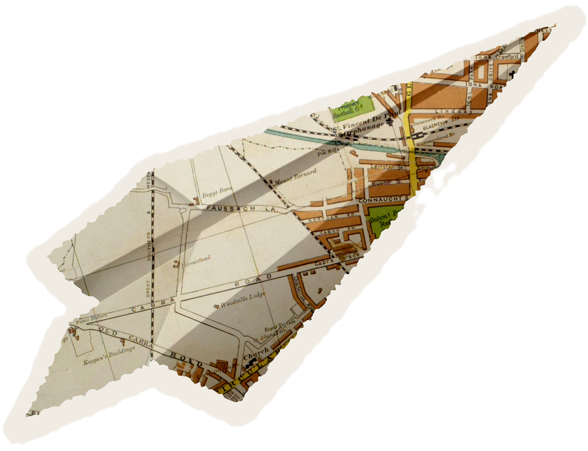
The recommended route is to fly to Bishkek (FRU / BSZ) and take a connecting 35-minute domestic flight to Osh (OSS).
International flights to Bishkek:
Bishkek → Osh (35 min):
Citizens of most countries can enter Kyrgyzstan visa-free for 30–60 days. Others can apply for an e-visa online or get one on arrival.
Some nationalities must apply through a Kyrgyz embassy, please check the requirements for your passport at:
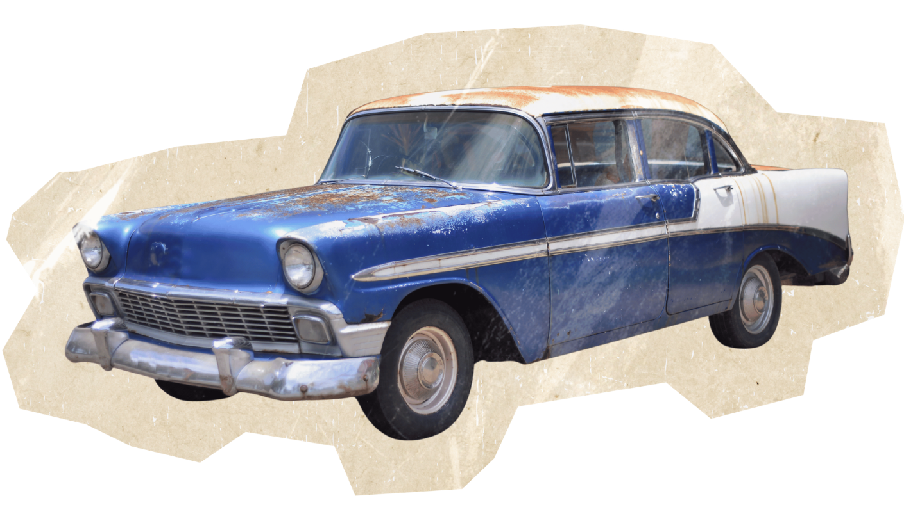
Shared taxis depart from Bishkek's Osh Bazaar, or you can find a private car via the inDrive app and negotiate the price directly.
Price per seat: $18–30 USD (1,500–2,500 KGS), or more if you take the whole car to yourself. But the views are worth it!
Journey is 10–12 hours via the scenic Bishkek–Osh highway. The road crosses the Too Ashuu Pass (3,000+ m), bring warm layers even in summer.
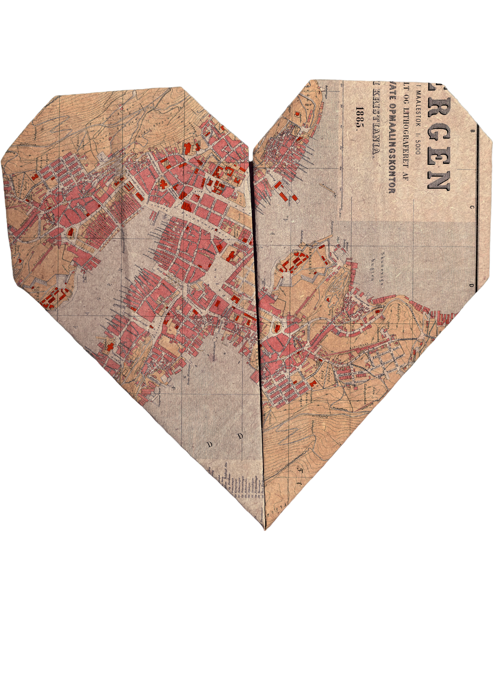
Use Yandex Go - the most popular taxi app in Osh. Fixed fares, no haggling needed.
Kasiet Grand Palace is well known to all local drivers, just say the name!
For navigation, download 2GIS, it's the go-to maps app in Osh and works much better than Google Maps locally. Make sure to download it before you arrive.
Accommodation
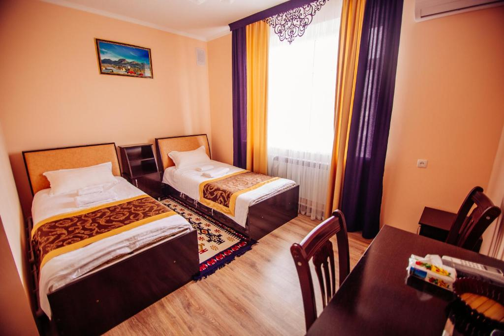
As a gesture of hospitality, we've reserved rooms for you at this hotel!
Rooms are booked for June 5 – June 8. For different dates, just let Elnura know. If you'd prefer a different hotel, let her know so she can cancel your reservation. Otherwise, simply mention "Elnura's Kyz Uzatuu" when checking in.
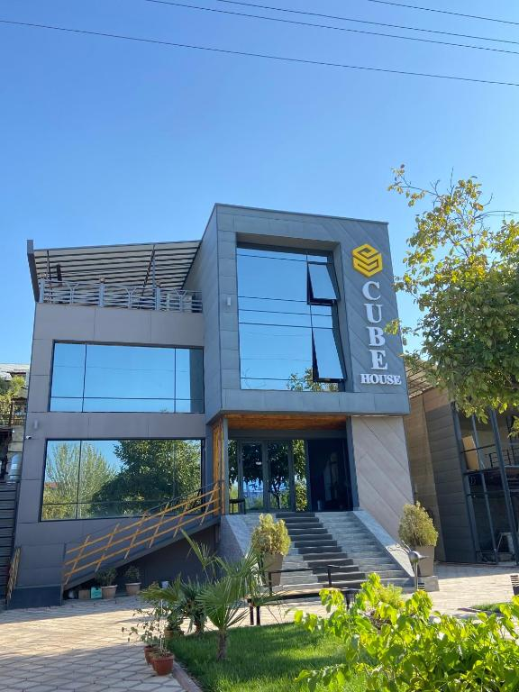
A modern boutique hotel with a terrace, restaurant, and bar. Highly rated for cleanliness, comfort, and friendly staff. Free WiFi, free parking, and à la carte breakfast available. Bike hire on site.
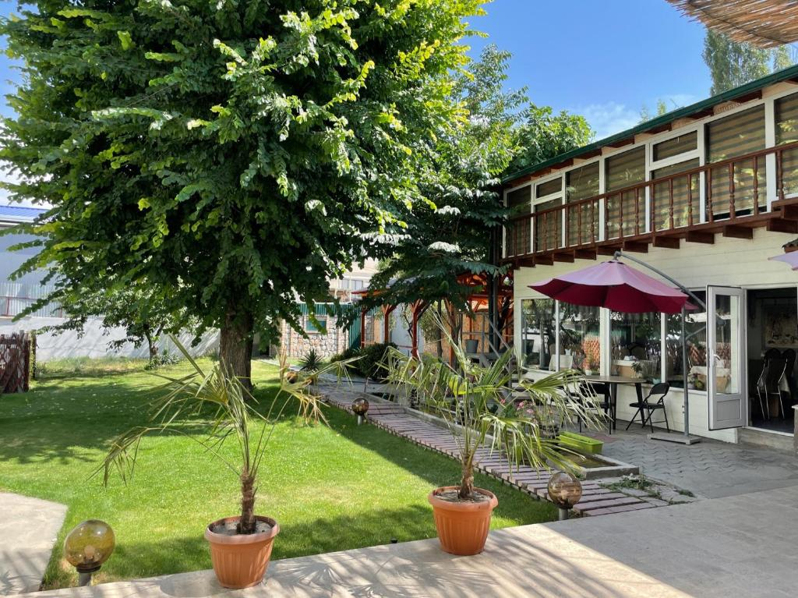
Family rooms with air-conditioning, private bathrooms, and free WiFi. Relax in the garden or on the terrace, enjoy the bar and shared kitchen. Halal breakfast served daily. Free private parking, 24-hour front desk, and staff who speak English and Russian.
June 5 – 7
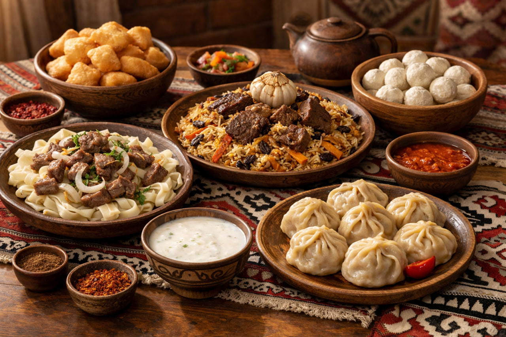
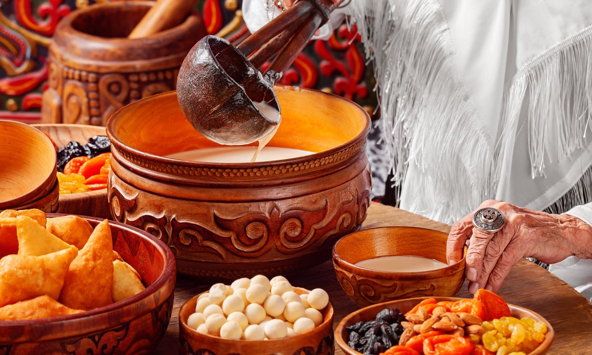
Welcome to Elnura's home - come in, make yourself comfortable, and join the family.
The groom and his closest friends join the gathering at Elnura's home.
A generous homemade feast of Kyrgyz cuisine, served family style. The table is laid with love, pull up a chair and eat as much as you like.
The table never empties. All afternoon the family keeps bringing out dish after dish - classic Kyrgyz recipes made from scratch. Relax, chat, snack, and enjoy the warmth of a true Kyrgyz home.
As the sun sets, the table fills once more with hearty evening dishes. Gather around for another spread of authentic Kyrgyz food, stories, and celebration late into the night.
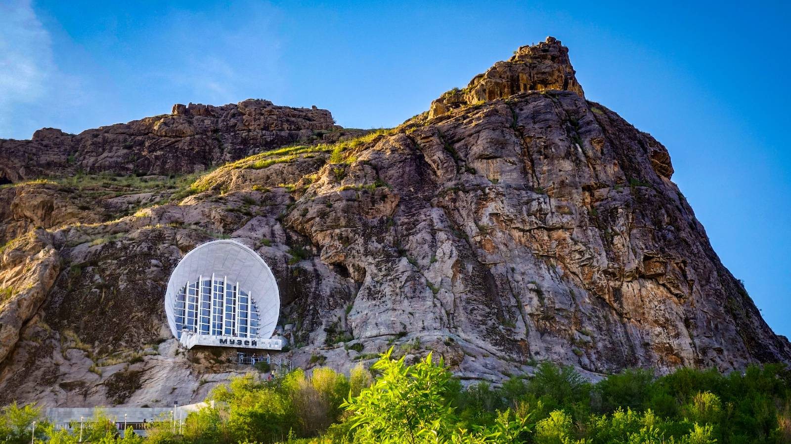
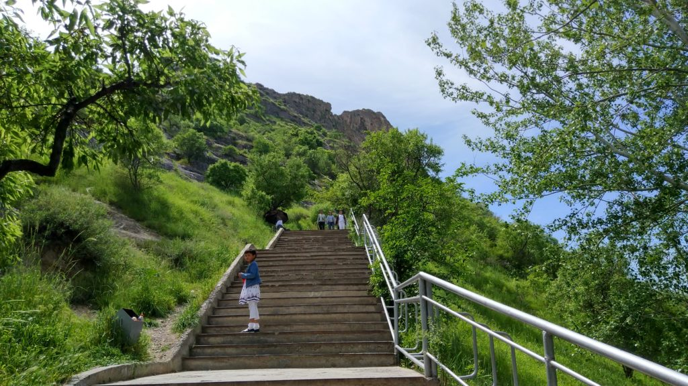
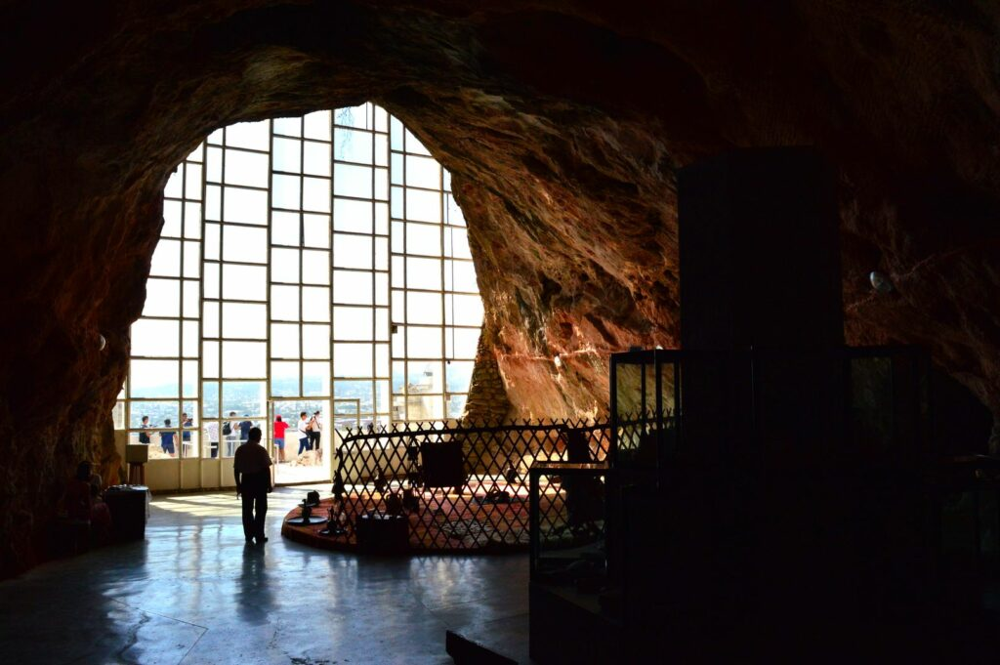
Kyrgyzstan's only UNESCO World Heritage Site, rising above the city of Osh. Considered "the most complete example of a sacred mountain anywhere in Central Asia," it has been a place of pilgrimage for millennia. Once believed to mark the midpoint of the ancient Silk Road, the mountain was described by Claudius Ptolemy as the famous "Stone Tower." At the summit stands a small mosque originally built by Babur in 1510, and the slopes hold ancient cave drawings and sacred shrines still visited by locals today. We will also explore the National Historical and Archaeological Museum Complex inside the mountain, which showcases the area's rich history from the Soviet era through antiquity.
A relaxed sit-down lunch to refuel with authentic local flavors before the big evening ahead.
Head back to the hotel and take time to freshen up and dress for the evening celebration.
Doors open, guests begin arriving at Kasiet Grand Palace Restaurant. Find your seat, greet familiar faces, and soak in the atmosphere.
The MC welcomes everyone and officially opens the celebration. The groom and his friends make their entrance, followed by the bride's grand entrance, the moment the evening has been building toward.
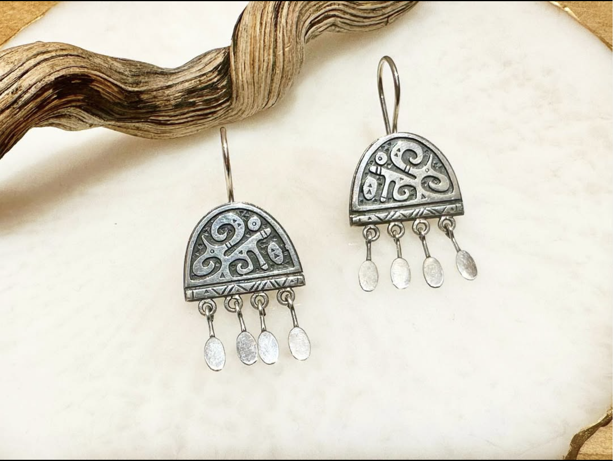
Traditional Syrga Saluu CeremonyA cherished ritual at the heart of every Kyrgyz wedding. During Syrga Saluu, the groom's family presents the bride with a delicate earring — syrga — symbolizing the sincerity of the groom's intentions and the mutual blessing of both families to unite in marriage. A deeply moving moment full of meaning and tradition.
Both families formally welcome one another and the celebration opens in full. The rest of the evening is a joyful feast - live music, traditional games, an abundant spread of food, and the kind of warm Kyrgyz hospitality that stays with you long after the night ends.
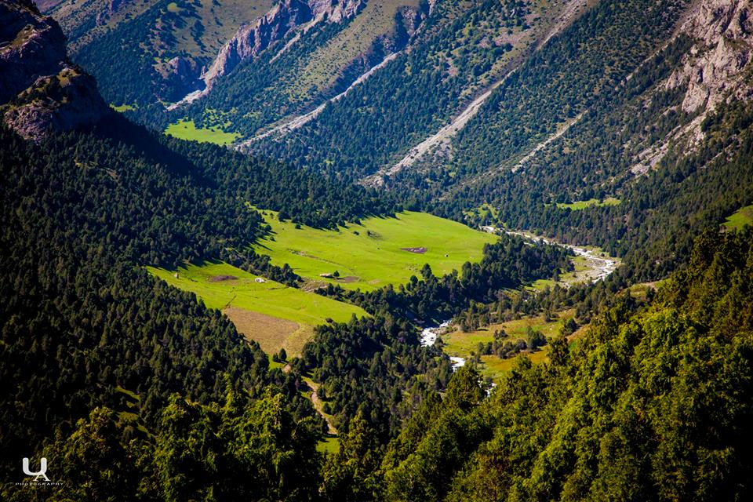
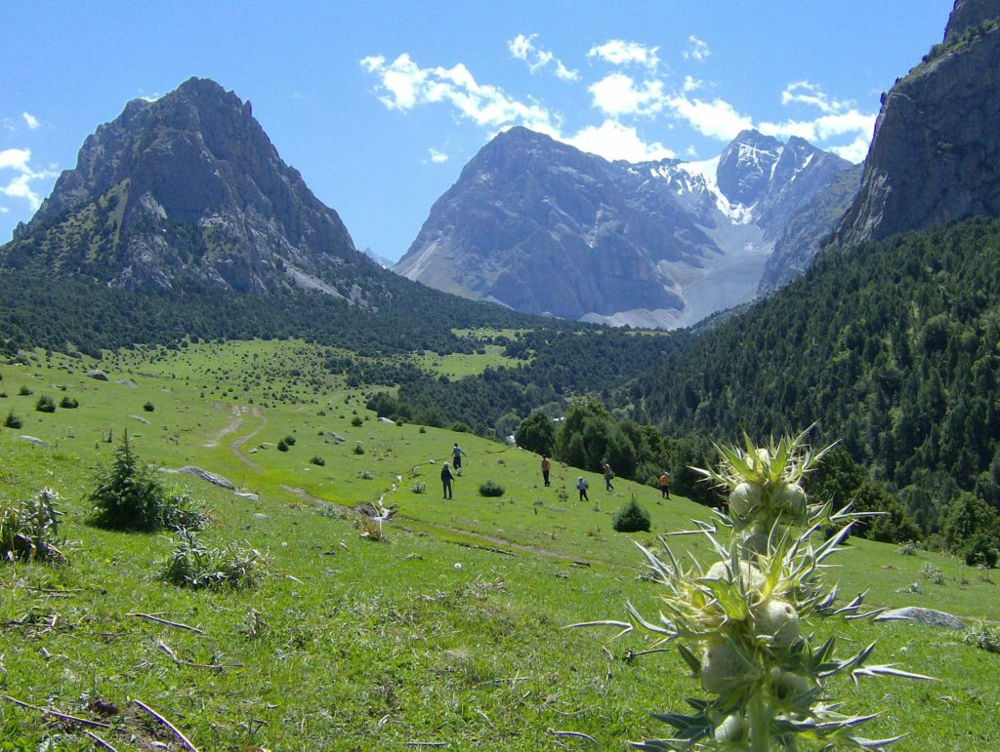
Pack a light bag and get ready for a beautiful day out in nature.
We head out into the mountains - stunning scenery, wide open spaces, and fresh air all around.
Plenty of space to wander, take photos, and simply enjoy the landscape. No strenuous activity, just a relaxed, leisurely time surrounded by some of the most breathtaking scenery in the south of Kyrgyzstan.
A proper spread laid out in the open air - good food, great company, and mountains all around. The perfect way to close the celebrations.
Rest of the afternoon free. Departing guests can catch evening flights or overnight transport.